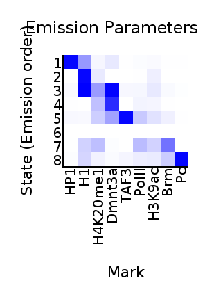
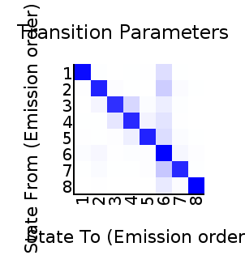

<center><h1>ChromHMM Report</h1></center>
Input Directory: binarized/<br>
Output Directory: model_8/<br>
Number of States: 8<br>
Assembly: dm6<br>
Full ChromHMM command: LearnModel -b 300 -i model_8 binarized/ model_8/ 8 dm6
<h1>Model Parameters</h1>
<br>
<li><a href="emissions_8_model_8.svg">Emission Parameter SVG File</a><br>
<li><a href="emissions_8_model_8.txt">Emission Parameter Tab-Delimited Text File</a><br>
<br>
<li><a href="transitions_8_model_8.svg">Transition Parameter SVG File</a><br>
<li><a href="transitions_8_model_8.txt">Transition Parameter Tab-Delimited Text File</a><br><br>
<li><a href="model_8_model_8.txt">All Model Parameters Tab-Delimited Text File</a> <br>
<h1>Genome Segmentation Files</h1>
<li><a href="epNSC_8_model_8_segments.bed">epNSC_8_model_8 Segmentation File (Four Column Bed File)</a><br>
<li><a href="lpNSC_8_model_8_segments.bed">lpNSC_8_model_8 Segmentation File (Four Column Bed File)</a><br>
<li><a href="qNSC_8_model_8_segments.bed">qNSC_8_model_8 Segmentation File (Four Column Bed File)</a><br>
<br>
Custom Tracks for loading into the <a href="http://genome.ucsc.edu">UCSC Genome Browser</a>:<br>
<li><a href=epNSC_8_model_8_dense.bed>epNSC_8_model_8 Browser Custom Track Dense File</a> <br>
<li><a href=epNSC_8_model_8_expanded.bed>epNSC_8_model_8 Browser Custom Track Expanded File</a><br>
<li><a href=lpNSC_8_model_8_dense.bed>lpNSC_8_model_8 Browser Custom Track Dense File</a> <br>
<li><a href=lpNSC_8_model_8_